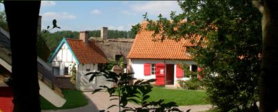
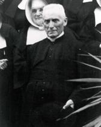
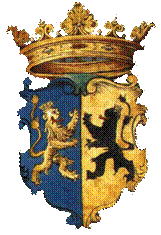
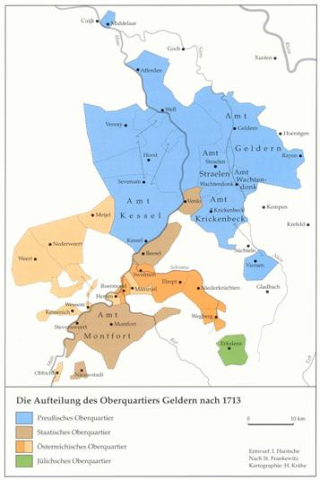
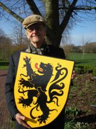
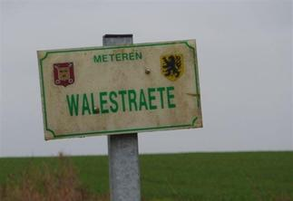
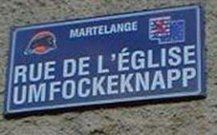
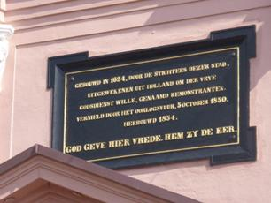

> nieuwsbrief
> 30e jg. - 4e trimester 2012
| Bijdragen over: | Tip |
op 29
september 2012 te Villeneuve dAscq
In
een fraai landelijk decor kan men een 20-tal gebouwen bewonderen uit
Frans-Vlaamse plattelandsdorpen zoals Millam, Nortkerque, Frethun,
Killem-Linde
en andere plaatsen. Deze werden gered van de sloop en herrezen als
getuigen van
onze landelijke beschaving van de 17e, 18e en 19e eeuw. Een smidse, een
bakkerswoning, lemen huisjes met rieten daken, een duiventil,
kapelletjes,
houten gebouwtjes te midden van tuintjes, boomgaarden en weiden met
heggen zijn
er te betreden. Dieren ontbreken evenmin, kippen, ezels, eenden,
ganzen,
koeien, een Vlaamse reus lopen er rond. Ambachtslieden beoefenen er
oude
beroepen.
Adres:
Musée de Plein Air - 143, rue
Colbert - F. 59493 Villeneuve dAscq
Programma - zaterdag 29 september 2012
Busreis: 10.15 uur: Halle (Brabant) station
Busrit naar
Rijsel Villeneuve dAscq via Mark
(Edingen) Cardinael om 10.30 uur Doornik,
Station om 11.10 uur - Rijsel (Villeneuve
dAscq) metrostation Quatre Cantons om 11.25 uur of op eigen
initiatief
naar Villeneuve dAscq.
In het MUSÉE DE PLEIN AIR
11.45
uur: Verwelkoming
Lezing
door
Vraaggesprek
met
13.00
uur: Vlaams middagmaal: Aperitief - Salade
chti - Parelhoen op Vlaame wijze - Perle flamande Koffie en één
consumptie
naar keuze.
14.45
uur: geleide rondleiding door het Openluchtmuseum.
16.30
uur: vieruurtje.
17.15
uur: afsluit en terugkeer (busrit) via Quatre Cantons 17.30 uur:
Doornik
17.50 uur: Mark 18.35 uur: naar Halle 18.50 uur.
De deelnamemodaliteiten:
a) 40,00 uro: entreegeld rondleidingen sprekers
middagmaal vieruurtje, voor wie op eigen houtje naar Villeneuve
dAscq
komt.
b) 55,00 uro: idem als a) + de becommentarieerde
busrit.
Vermeld of u op eigen houtje
of met de bus
naar Rijsel Villeneuve dAscq komt.
Wie voor a) kiest, komt met
eigen vervoer of
op eigen houtje.
Wie voor b) kiest, komt met de
bus en vermeld waar hij/zij op- en afstapt,
hetzij te Halle , Mark, Doornik of het metrostation Quatre Cantons te
Rijsel.
Inschrijving en betaling vóór
23 september 2012 op een
van de Zannekin-rekeningen
(zie p.
1); aanmelden via het secretariaat te Ieper, bij voorkeur via e-post: maurits.cailliau@skynet.be
 Beeld van het Openluchtmuseum
te Villeneuve dAscq
Van 18
Wat vanuit ons perspectief interessant is,
is
natuurlijk de weergave van de grensgebieden van de Nederlanden, ofwel
de Franse
expansie naar het noor-den. In de tentoonstelling waren daartoe drie
plan-reliëfs opgenomen van noordelijke steden, te weten Sint-Omaars,
Luxemburg
en Bergen-op-Zoom. Sint-Omaars werd bij de Vrede van Nijmegen in 1678
afgestaan
aan Frankijk. In het plan-reliëf zijn niet alleen de vroegere
vestingwerken van
de stad met de schansen en ravelijnen daar omheen duidelijk te zien
maar ook de
stedelijke bebouwing zelf. Ook alle stadsbebouwing binnen de muren werd
uiterst
mi-nutieus nagebouwd. Uiteraard was de kathedraal duidelijk te
onderscheiden,
maar ook de imposante Sint-Bertijnsabdij, die overigens in het echt in
1792
werd afgebroken door de Franse revolutionairen.
Al bladerend in de literatuur die te koop
was bij de
tentoonstelling kwam ik op het spoor van een soortgelijke
tentoonstelling in
het Museum van de Schone Kunsten (Musée des Beaux-Arts) te Rijsel. Hier
zijn
sinds 1986 de plan-reliëfs van de meest toonaangevende vestingsteden in
het
Frans-Belgische grensgebied permanent tentoongesteld in een aparte
vleugel van
het museum. Wellicht dat we daar met Zannekin
een keer een bezoek aan kunnen brengen.
De SILVERIJSER - Geschiedenis van Herk-de-Stad
Willy Alenus,
Oostende
De toekomstige Eerwaarde Heer
Florent
Silverijser werd op 21 oktober 1870 geboren te Borgloon.
Priester-leraar zijnde
werd hij in 1905 tot aalmoezenier benoemd van het Ursulinenklooster in
Herk-de-Stad. Daar zou hij sterven op 9 februari
Verwonderlijk is dat niet als
men ermee
rekening houdt dat hij een neefje (oomzegger) was van kanunnik Joseph
Daris
(Borgloon 1821-Borgloon 1905). Een autodidact-historicus met bijzondere
interesse voor de voormalige vorstendommen Loon en Luik. Auteur van een
geschiedenis van het prinsbisdom Luik in 17 delen.
Florent
Silverijser
Silverijser
publiceerde de leesbaar gemaakte vruchten van zijn
research in het Herkse weekblad,
Wij
vinden het de moeite hier een stukje te publiceren van de
geschiedenis van Herk-de-Stad door Silverijser, dat bewaard is
gebleven. De
oorspronkelijke schrijfwijze werd her en der vertaald naar het hedendaagse Nederlands. Omwille
van de leesbaarheid. Ook zijn inspanning,
als geboren
en getogen francofoon, om Vlaamsch te leren en te schrijven verdient
respect.
Vermits
de geschiedenis van Herk, een van de oude steden van het graafschap
Loon,
nergens geschreven staat, zal het misschien voor sommige personen
aangenaam
wezen enkele van onze opzoekingen aangaande de geschiedenis der stad
Herk te
lezen. Vanaf de 11e eeuw stond Herk en, om zo te zeggen, de ganse
(hele) streek der hedendaagse
provincie Limburg, onder het gezag der graven van de stad Loon
(Borgloon).
De graven van Loon waren
onderhorige leenmannen, afhangende van de leenheren prins-bisschoppen
van Luik, die op hun beurt en op zekere
wijze ook afhingen van de opperleenheren, keizers van Duitsland.
Maar, nadat in t jaar 1365, de Luikenaren, onder de leiding
van Jan van Rochefort, de baron Arnold van Rummen, die beweerde recht
te hebben
op het graafschap Loon, overwonnen en zijn kasteel verwoest hadden,
ging dit
graafschap over tot het prinsbisdom Luik in een tweeling- staatsverband.
Gedurende de drie eeuwen dat
de onafhankelijke graven van Loon hun ondergeschikt gezag hier hebben
uitgevoerd, droegen zij veel bij tot het welzijn van deze streek.
Immers, is
het niet Arnold die de abdij van Averbode stichtte. (
Was het niet Gerardus de
Eerste (1171-1195) zoon van Lodewijk, die naar het voorbeeld van
Arnold, een
andere abdij te Herckenrode oprichtte, toen hij op het einde der
twaalfde eeuw,
een tweede woonplaats in Kuringen bij Hasselt uitkoos, waar hij een
rustiger
leven kon leiden dan in zijn versterkte
stad Loon.
Herk-de-stad
in het centrum van West-Europa
Lodewijk de Tweede
(1195-1218), zoon van Gerardus, met zijn wapenbroeder Hugo de Pierpont,
prins-bisschop van Luik, streed aan het hoofd van een leger waaronder
zich
dappere Herkenaren bevonden, in de slag van Steppe bij Montenaken,
(1213) om
onze vrijheid tegen de Brabanders te verdedigen.
Eigenlijk is het te danken
aan Arnold de Vierde (1227-1273),
echtgenoot van Johanna van Chiny (hun portretten bevinden zich in het
stadsmuseum te Hasselt), dat de burgers van Herk verschillende voorrechten te danken hebben. Zo
verkregen zij onder andere, in t jaar 1241, de verzekering niet
willekeurig
aangehouden of gevangen genomen te worden. Zij werden onafhankelijk in
hun
persoon (habeas corpus) en hun
goederen; hun woning werd onschendbaar, zodat zij, met alle vrije
Luikenaren
het spreekwoord van het Luikerland konden herhalen: ieder meester in
zijn
eigen huis.
Evenals de Herkenaren in den
slag van Montenaken dapper streden onder de leiding van Lodewijk de
Tweede, zo
ook vochten zij met heldenmoed in de strijd
van
Woeringen (1288),
onder de leiding van Arnold de Vijfde. Onder het bestuur van de
graaf Diederik van Heinsberg, (1336-1361) kleinzoon van Arnold de Vijfde, kreeg Herk, op
7 jaren
tijd, het bezoek van een koning van Engeland en van twee keizers van
Duitsland,
hetgeen waarschijnlijk nimmer meer gebeuren zal!
Inderdaad, in de maand
november van het jaar 1338 (één jaar na het begin van de honderdjarige
oorlog),
ontving de koning van Engeland, Edward de
Derde, die
zich in het Korenhuis te Herk bevond, de afgezanten van Lodewijk
de
Vijfde, keizer van Duitsland, die met hem tegen Frankrijk samenspande.
In t
Korenhuis van Herk waren aldus de bijzonderste herto-gen en graven van
de
streek aanwezig. Een van hen, namelijk Jan de Derde, hertog van
Brabant, stak
zijn degen over Edwards hoofd om zijn gezag te erkennen.
Zes jaren later, dus in t
jaar 1344, tekende de wereldberoemde Jan de Blinde, keizer van
Duitsland, twee
keuren hier in t Korenhuis. (
In het jaar 1349 ontving
Herk het bezoek van een tweede keizer van Duitsland, namelijk van Karel
de
Vierde die hier de gouden bulle van
Brabant opstelde. Deze bulle schonk zekere voorrechten aan de
Brabanders.
Graafschap Loon als
Doppelfürstentum met Luik
Arnold wilde echter van geen
vrede weten; daarom duurde de strijd voort tot 14 oktober 1365, toen,
na negen
weken belegering, het kasteel van Rummen tot op de bodem gesloopt werd.
Bij
deze belegering werd voor het eerst in het graafschap Loon en in het
Luikerland
van donderbussen (kanonnen) of bombarden gebruik gemaakt. Nu nog ziet
men een
deel der onderaardse muren van het versterkt kasteel van Rummen op de
plaats
Warande genoemd. Eigenlijk, mits de vervulling van zekere
voor-waarden, gaf
Arnold van Rummen zich over en al zo kwam in t jaar 1365 het
graafschap Loon
alsmede de Stad Herk onder het bestuur der prins-bisschoppen van Luik. (N.v.W.A. - Maar dan wel in hun hoedanigheid van graven van Loon).
Gedurende
de belegering van het kasteel van Rummen, is Jan
van Arckel, prins-bisschop van Luik, op verzoek van Wenceslas, hertog
van
Brabant, naar Herk gekomen om de
vrede te bewerken en Arnold van Rummen te doen afzien van zijn
aanspraak op de
kroon van het graafschap Loon. Maar Arnold wilde van geen vrede weten,
zodat na
negen weken belegering het kasteel van Rummen tot op de grond gesloopt
werd.
Tot 1365 behoorde de stad
Herk toe aan het graafschap Loon, maar nu komt zij tot aan de Franse
omwenteling onder het bestuur van de prins-bisschoppen van Luik. Dee
kerk van
Herk daarentegen hoorde toe, vanaf het begin van de Franse bezetting
(1796-
1815), toe aan het kapittel van Onze Lieve Vrouwkerk van Maastricht en
zo komt
het dat, tot aan de Franse tijd, het kapittel van Maastricht en niet de
prins-bisschop van Luik, de pastoors van Herk benoemde.
Toen men in het jaar 1395,
ten gevolge van een twist die losbrak tussen Jan van Beieren,
prins-bisschop
van Luik en zijn volk, op het punt stond ten strijde te trekken, werden
hier in
Herk en elders vredesonderhandelingen
beraamd.
In het jaar 1401 was een
geschil ontstaan tussen Neerpelt enerzijds en Achel en
St-Huibrechts-Lille
anderzijds, ter zake de afpalingen van heidevlakten die zich tussen
deze
gemeenten uitstrekten. Neerpelt hoorde toe aan het prins-bisdom Luik.
Achel en
St-Huibrecht-Lille daarentegen maakten deel uit van de
vrij-heerlijkheid
Grevenbroek. Afgezanten van Jan Beieren bepaalden letterlijk een
grenslijn, doch
Robrecht van Arckel, heer van Grevenbroek, deed de grenspalen
uittrekken en in
het neerhof van den landrechter (drossaard) van Neerpelt werpen.
Jan van Beieren ontstak in
een blinde woede en riep de burgers van Herk en van enkele andere
steden onder
de wapens. Dit leger waaronder Herkenaren, legde Achel en
St-Huibrechts-Lille in
de as en belegerde vervolgens de forten van Hamont en Grevenbroek, die
zich
overgaven.
Acht jaren later, in 1409
gebeurde er hier in Herk een ander merkwaardig feit. De rechthaters (haidroits)
waren oproerlingen die hun vorst al dikwijls bevochten hadden. In het
jaar 1409
gebeurde hetzelfde. Om de krachten van de prins te verdelen en ze aldus
te
verzwakken, vielen de haidroits het prinsbisdom, van twee kanten
tegelijk aan:
te Herk en te Hoei. Herk werd den 20 september 1409, ingevolge de
overmacht van
de aanvallers ingenomen, maar s anderendaags, de 1e oktober, weer
verlost door
Godenoel van Elderen, die zich aan het
hoofd bevond
van de gewapende burgers van de steden van het prinsbisdom.
Hij nam 91 oproerlingen
gevangen: 72 van hen werden gepijnigd en geradbraakt, of aan de galg
opgeknoopt, hier in Herk; 18 van hen werden naar Luik gevoerd en ook
daar tot
de doodstraf veroordeeld. Jan van Spa, hun aanvoerder die op 30
september Herk
ingenomen had, werd ook naar Luik gevoerd en aldaar op 5 oktober, op de
Place
Saint-Lambert gevierendeeld. Vier van de medeplichtigen van Jan van Spa
werden
gedwongen zijn stoffelijk overschot buiten de stad te dragen, waarna
ook zij
onthoofd werden.
Hier willen wij van een
eigenaardig gebruik gewag maken. De abdij Orienten, tussen Rummen en
Binderveld
gelegen, was verplicht het hout te leveren voor de galg van Herk, de
abdij van
Herckenrode was belast een kar ter beschikking te stellen, om de ter
dood veroordeelden
tot op de strafplaats, tot aan de galg te brengen.
____________
P.S. Florent Silverijser was van mening dat
het Hof
de afkorting van gerechtshof zou kunnen zijn. Maar onder het Ancien
Régime
behoorde de rechtspraak in eerste instantie toe aan de schepenbank,
die ook
uitvoerende macht had. De scheiding der machten, in theorie, dateert
van de
tweede helft van de 18e eeuw.
De digitale Winkler
Prins leert ons het volgende: In de middeleeuwen duidde men met
het begrip
hof (ook wel villa of curtis
genoemd) het bezit van één heer aan. Een verdere ontwikkeling van het
begrip is
die van residentie van de vorst (
), voorts van de personen die hem
omringden
(zie hofhouding) en ten slotte van de vorstelijke raad (curia
regis), in het bijzonder het met rechtspraak belaste deel
daarvan.
In Herk-de-Stad heette de
resident-afgevaardigde van
de graaf van Loon, c.q. van de prins-bisschop van Luik, coactor of receptor (RAH, Herk-de-Stad,
schepenbank, akten, reg. 92, ult f°).
voortgezet)
De
geschiedenis wordt wat concreter in de 11e eeuw, als de hoeveelheid
overgeleverde oorkonden en andere geschreven stukken langzaam begint
toe te
nemen. In 1096 noemt de graaf van Gelre zich voor het eerst ook
inderdaad graaf
van Gelre. Een tijd van expansie volgt. In 1279 bijvoorbeeld weet de
graaf van
Gelre het graaf-schap Kessel aan zich te binden. Dit graafschap wordt
onderdeel
van het Overkwartier.
In
1473 werd Gelre door de Bourgondische hertog Karel de Stoute met steun
van het
hertogdom Kleef bezet. Kleef ontving voor bewezen diensten enige
Gelderse
gebieden waaronder het ambt Goch en Mook.
Hoewel
grote veldslagen er niet hebben plaats gevonden, was het Overkwartier
gedurende
de Tachtigjarige oorlog voortdurend strijdtoneel tussen Staatse en
Spaanse
troepen. Troepenbewegingen langs de Maas vonden regelmatig plaats.
Venlo,
Roermond en Geldern werden regelmatig belegerd terwijl het platteland
door
zowel Staatse als Spaanse troepen werd gebrandschat en geplunderd. Rond
het jaar
1580 vond de definitieve scheiding plaats tussen het Overkwartier en de
overige
drie kwartieren.
In
1700 overlijdt de Spaanse koning Karel II zonder duidelijke opvolger na
te
laten. De discussie omtrent de erfopvolging ontaardde in de Spaanse
Successieoorlog van 1702 tot 1713.

Deze
situatie bleef gehandhaafd tot 1794 toen de Franse revolutionaire
legers de
zuidelijke Nederlanden bezetten. Oude territoriale grenzen verdwijnen
en nieuwe
ontstaan. Een deel van het oude Overkwartier wordt ondergebracht in het
Departement de
In
1814 worden de Fransen weer verdreven door Pruisische en Russische
strijdkrachten.
Tijdens het Congres van Wenen in 1815 wordt bepaald dat het
Departement de
___________________
Bron:
http://www.overkwartiervangelre.nl/main_frame.html
Webpagina
van de grensoverschrijdende vereniging Overkwartier van Gelre.
Dit wordt gevierd met de uitgave van een
jubileumboek.
De onderwerpen hebben alle betrekking op
het
Overkwartier van Gelre en bestrijken een periode van de Late
Middeleeuwen tot
in de twintigste eeuw. In het boek komen, onder andere de volgende
onderwerpen
aan bod: de vroegste Venlose stadsschrijvers; de heksenvervolgingen in
Straelen; de kartografische weergave van het Overkwartier, genealogieen
van de
adellijke families Van Holtmoelen en Van Aefferden
en de
patriciersfamilie Poell, dopen en huwelijken van vreemden in
Venlo in
de periode 1636 tot 1639, de marktkramen van Kevelaer, een
correspondence van
een eenvoudige familie in het begin van de achttiende eeuw en de
Nederrijnse
adel.
Marten Heida
Een na
te
volgen Oostfriese raadgeving
Uit het inleidend woord van dr. Lübbert
Haneborger in
het mei-nummer van Ostfriesland Magazin
is één opmerking bij mij blijven hangen. Hij refereert aan de
hoogtijdagen ter
gelegenheid waarvan men als bewoners in grens-regios (in dit verband
Oost-Friesland en Groningen) bij elkaar op bezoek pleegt te gaan.
Mogelijk zal men tegenwerpen dat
Oost-Friesland zover
weg is. Veel hout snijdt een dergelijke opmerking niet vooral als gelet
wordt
op de ver-plaatsingen die velen zich veroorloven tijdens hun verlof.
Afstand is
uiteindelijk een relatief begrip; het is sterk afhankelijk van de
prioriteiten
die gesteld worden.
Soms
kwam in
Emden Duinkerke binnen het gezichtsveld
Op 13 maart 1696 was in de buurt van
Delfzijl op de
Eems een Duinkerker kaperschip aan de grond gelopen. De bemanning was
aanvankelijk niet van plan zich over te geven aan daar varende Emder
convooischepen. Eerst na een vuurgevecht konden de mannen - meer dan
dertig in getal
- als gevangenen naar Emden opgebracht worden. Hun aanvoerder was de
Duinkerker
kaperkapitein Louis le Mel (hij was getrouwd met een schoonzuster van
Jan Bart,
ook geen onbekende in de kapermaatschappij). Daar Lodewijk XIV toen in
oorlog
was met Duitsland en Le Mel een kaperbrief kon laten zien, werden hij
en zijn
mannen behandeld als krijgsgevangenen. Omdat het levensonderhoud van
deze
ongenode gasten Emden geld zou gaan kosten werd er onderhandeld over
losgeld.
De daarop betrekking hebbende brief van de kapers is gesteld in het
Nederlands
wat niet verwonderlijk is daar in beide havensteden op het eind van de
17e eeuw
deze taal nog de huistaal was. Overeengekomen werd dat Le Mel naar
Duinkerke
mocht afreizen om het losgeld op te halen; op 12 april komt hij daar
aan. Zijn
mensen blijven zolang als gevangenen achter.
Bron: Ostfreesland.
Kalender für Ostfriesland, 2012, pp. 138-145.
Willem
Alexander stamt af van een Oostfriese hoofdeling
Een van de dorpen in de Krummhörn is
Pewsum.
Bron:
Die Krummhörn, p. 71.
Ook
Mickey Mouse
blijkt Oostfriese wortels te hebben
In 1869 verlaat Eert Ubbe Iwwerks zijn
geboortedorp
Uttum, ook een dorp in de Krummhörn. Zijn kleinzoon is de in
Marten Heida,Prins
Willem
Alexanderpark
53, 3905 CB
Veenendaal
Jean-Claude
Bottin
is
heengegaan op vrijdag 22 juni 2012 op de leeftijd van 74 jaar.
Jean-Claude
hield van zijn Vlaanderen. Honderden Euvo-bordjes
heeft hij geschilderd maar ook tekeningen van het landelijke
Vlaanderen. Hij
maakte prachtige tekeningen voor de kalender van het Davidsfonds
Frans-Vlaanderen. Zijn laatste verwezenlijking was het Euvo-bord, dat tijdelijk te
bezichtigen is in het huis van de
Veldslag in Noordpeene.

Een stille regermanisering van
de verloren gebieden


Een vriend van
Frans-Vlaanderen en van het
Nederlands ging heen
Wij
zingen ABN omdat iedereen dat begrijpen ken, luidde de aanhef van het
overlijdensbericht van Leo Gerard van Dorp. Leo werd te Leiden geboren
op 16
december 1932 en overleed in Amsterdam op 29 juni 2012.
Ik
ontmoette hem voor het eerst in het Zeeuws-Vlaamse Hulst eind jaren
zeven-tig
van vorige eeuw. Dat was ter gelegenheid van de Frans-Vlaamse
cultuurdag
aldaar. Hij was een bevlogen man, hij hanteerde een vlotte pen, waarin
hij
kroop wanneer bepaalde taaltoestanden scheefgetrokken werden of waren.
Hij nam
regelmatig deel aan activiteiten van onze Stichting Zannekin.

"De
Zavelberg" - Edouard Michielsstraat 51,B.
1180 UKKEL / Brussel
T.
00 32 485 630 227 - E.
leo.camerlynck@skynet.be